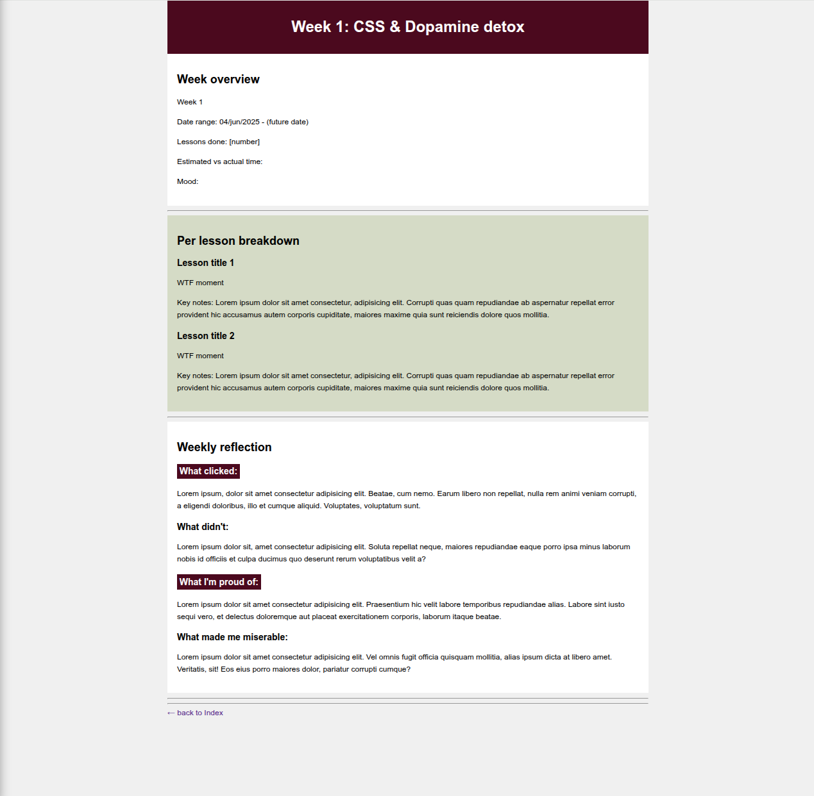

Overview
Date: 04/jun/2025 - 15/jun/2025 (😭)
- Finished lesson 6 (basic CSS I aplied here)
- Did the whole CSS selectors lesson (Section 7)
- Maybe did some of lesson 8?
- Didn't track properly. I was super motivated at first, then as usual got sidetracked by other things and didn't even realise how long I went without doing a single lesson.
Reflection
I came into this first week fully motivated. I was *finally* going to sit down and get it done, not like the two hundred previous times I told myself the same thing. This time I had THE method. Yeah. Turned out it was the same old story with new sparkles.
I don't know how I keep falling for my own “organize-and-find-new-methods” lies as a way of feeling productive. You'd think that by now I'd have learned my lesson? But nope.
Well, I started the week strong, doing the basic CSS and thinking "I got this". I got cocky. Once I got into selectors, pseudo-classes, and the cascade itself, I started thinking about my *next steps* once I finished this course. Because... why not?
This course is soooo easy.
So I went: I need to study more CSS, supplement this course, jump into TOP, maybe CS50? I'd love to get into cybersecurity. Let's ask some AI chatbot for a roadmap, look up resources, success stories, and people coming into it from unconventional backgrounds. No, wait, you know what? I should study web dev + cybersecurity + AI or ML. All at the same time. YEAH! What a great idea. You are a genius! *pats her own back*
...
Girl. What? Go tf back to your little course. You are on lesson 6 out of SEVENTY-FOUR. Stop the grandiose daydreaming and do something for once, please.
So... yeah. I genuinely can't remember where I stopped. I think I finished lessons 6 and 7, maybe 8? Who knows. At some point I closed the ten tabs and never opened them again until a few days ago (I'm writing this on June 22).
Definitely not a productive week, but that's kind of why I'm writing this — to keep myself accountable, even if I don't write the summaries when I intended to. That way, at some point I can either break the dopamine spiral of chasing new shiny things and remind myself what I'm doing and why... or break the shame spiral when I realize I've wasted weeks again and instead of wasting more weeks in that spiral, slap some sense into myself and come back.
I want to document both the pretty and the ugly weeks. This is definitely one of the uglies. Ha.
Final Thoughts
Lessons Learned:
PLANNING IS NOT PROGRESS.
Burn that into your head. For me, it'd be better to code aimlessly for a week than to finish a single 20-minute video and then plan for 4 hours about what apprenticeship I'm going to take or whether I should join a startup.
You have a course. That's the path. Follow it. You'll think about what comes later... well... later. This is just procrastination with extra steps.
Frustration Level:
8/10 — but more frustrated with myself than the material.
Kind of happy with how my mediocre CSS looks here though.
